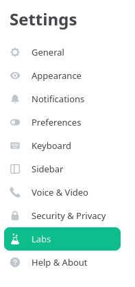
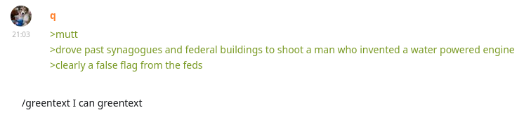

Matrix quickstart guide
This article is a user guide to Matrix. It also covers the most popular Matrix client program, Element.
Note: Due to privacy concerns I no longer use Matrix. If you need a private means of communication, please look elsewhere.
What is Matrix?
Matrix is an internet chat protocol. You can message people personally or in group chats, send files, and use end-to-end encryption to secure your communications. Unlike Discord or Telegram, Matrix is federated. It consists of many servers, each server hosts Matrix accounts and chats. You make an account on a Matrix server, it talks to other Matrix servers on your behalf and sends the data to you. Email is an example of a federated protocol.
On Matrix, usernames are referred to as MXIDs (Matrix IDs),
chats as rooms,
servers as homeservers.
You can also group rooms together to form spaces.
Matrix spaces behave like Discord "servers".
Why Matrix
There is a number of major advantages to Matrix that attract new users.
Protection against jannies. If you pick a trusted homeserver or host one yourself, you won't lose your account or your chats. On Discord, it is not a rare thing for "servers" to get banned. As a result, you have to create a new one and invite the old members back. No one guarantees you won't be banned again.
Although Matrix homeservers can ban rooms, they can't command other homeservers to do the same. A room exists as long as there's at least one homeserver that has not banned it.
So much freedom. Every piece of the Matrix ecosystem is Free/Libre software. This guarantees that you're not running malware on your computer, and you know what the software is doing.
Encryption. Encryption ensures that only you and the people you're talking to can read the content of the messages. Encryption is supported by many messengers, but in Matrix it is trustworthy and made easy to use. The message encryption system used by Matrix has been independently audited.
Note that encryption may or may not be enabled by default depending on the client application and the homeserver you use. It is recommended to enable it when creating private rooms but leaving it disabled when creating public rooms. Public rooms can be read by anybody anyway. Large rooms start lagging if they are encrypted.
All the usual features of messaging software. Group chats, direct messages, voice messages, voice and video calls, emoji and stickers, file and media sharing, etc.
Matrix rooms
All communications on Matrix happen through Matrix rooms. When you message someone directly, you also create a room, except it is tagged as direct in your account settings.
When a new user joins a room, the room is copied to their homeserver. This action might take some time to complete. If the server already has got a copy of the room, the user joins immediately.
Homeservers participate in rooms on behalf of their users. Since each server has a copy of the room, this creates redundancy. While at least two different homeservers participate in a room, the room stays alive even if one of the servers goes offline. When the last participant on a particular homeserver leaves a room, the room is supposed to be deleted from the homeserver. When the very last participant leaves the room, it becomes inaccessible and no one can join it ever again.
Homeservers can shut down (ban) rooms. If you try to join a banned room, you get an error saying, "This room has been blocked on this server." This indicates that you should ditch your current homeserver because it is run by control freaks.
Room admins can blocklist homeservers. If you try to join a room that has blocklisted your homeserver, you get an error saying, "Server is banned from room." This indicates that you need a new account on another homeserver to join the room.
Rooms have versions. When creating a new room, you want to pick the latest version to get all the possible features. The room's version can't be changed in the future, but the room can be upgraded to a newer version. Upgrading creates a new room with the same name and links the old room to the new room.
Matrix spaces
A Matrix space is a special room that contains references to other rooms. When a user enters a space, they see its description and a list of rooms to join. Spaces may reside inside other spaces. A room can belong to more than one space.
- Car parts (space)
- Wheels
- Engine
- Seats
- Windows
Normally you don't send messages to a space. Spaces only act as collections of other rooms.
Matrix accounts
You create your account on a server. The server stores all the data about your account. It also stores all your rooms and their message history.
When you register a new account, a homeserver may ask your Email address and/or a phone number. The server's admin can see this data, for extra privacy you want to find a homeserver that doesn't ask for it.
Unlike Matrix rooms, there's no redundancy to Matrix accounts. If you think that your homeserver may go offline at some point or ban you, keep a second account (an alt) registered on a different homeserver.
At some point Matrix may become more independent of homeservers and allow the users to keep their account data locally. Until then keep in mind that homeservers can die unexpectedly and take accounts with them.
Install a client program
To talk on Matrix you need any Matrix client.
- All Matrix clients are listed on Arch Wiki.
- If you are a phone poster, open F-droid and search for Matrix clients.
Usually people install
ElementorFluffychat. - Nheko often requires this fix.
Choose homeserver
If you have your own site, you can host a Matrix server on it. If not, pick a server that has open registration.
Never use matrix.org for anything other than trolling purposes,
and be aware that matrix.org admins will sell your data to Israel.
Running Element locally
Element-Desktop is built with Electron. You may not like it because it runs in a separate browser instance, takes too much time to start and consumes a lot of RAM. Unable to bear that, you could switch to another popular client. Alternatively, you can run Element in your browser. The easiest way to do it is to open an instance someone else has set up.
However, you may not want to do that either, because:
- Your homeserver doesn't have in-house Element.
- Connecting to a remote instance is slow.
- You don't trust another third-party.
The solution is to serve Element locally with a web-server and access it in a web browser.
You'll need:
- Any web server, like
nginx. I use darkhttpd. - element-web.
If you already have
element-desktopinstalled, you automatically have element-web.
The final part is to run the server and open Element in your web browser.
darkhttpd /usr/share/webapps/element --port 8000 --addr 127.0.0.1 --daemon --log /dev/null
Now go to http://127.0.0.1:8000/ and sign in to your account.
I have written a little script to quickly start and stop a local instance of element-web.
Caveats.
- element-web doesn't work well with
uMatrix.
uMatrix blocks third-party connections,
so you have to unblock your homeserver's URL.
It won't even start unless you block the default homeserver (set in
/etc/element/config.json). If you like trying out different homeservers, this quickly becomes annoying. - Certain features of Element rely on the ability
to copy or paste content to the system clipboard with JavaScript.
If you use Firefox or its derivative,
you may have to set
dom.event.clipboardevents.enabledtotrueto upload images and media files stored in the clipboard anddom.allow_cut_copytotrueto copy room links to the clipboard.
Configuring Element
Element has a Settings menu.
Unfortunately, there are some settings that can't be accessed without altering the config file.
If you're running element-web locally, edit /etc/element/config.json.
If you're running element-desktop (the electron app), create or edit ~/.config/Element/config.json.
Create the file if it doesn't exist yet.
In the config file, enable "Labs" to access the hidden settings.
{
"showLabsSettings": true
}
After you restart Element, the Labs will appear in Settings.

Labs in Settings.
Inside Labs, I recommend enabling the following.
- Message Pinning. It lets you see pinned messages in rooms.
- Threaded messaging. Lets you access threads inside rooms. A thread is a sub-timeline where people can talk independently of the main timeline.
- Developer mode. Makes it easier to access certain things.
- Show hidden events in timeline.
Further configuration.
- A documentation for Labs features can be found here.
- There are way more things you can alter in
config.json, see this page for the list of settings.
You can also snitch a config file from an existing instance. For example, like this.
# curl 'https://element.midov.pl/element/config.json' -o '/etc/element/config.json'
Every public instance of Element has its own config file.
Multi-accounting
If you want to use multiple different accounts at the same time, try the following options.
Element-desktop supports multiple profiles. This is how you can start a new profile.
$ element-desktop --profile "profile-name"You can have multiple container tabs in Firefox each running Element.
Ferdium. A desktop app that helps you combine various services into one application. It is based on Chromium and is rather bloated (over 300 MiB after installation).
Joining rooms
To join a room you can click on a room link if someone has shared it with you or accept an invitation if someone has invited you.
Finding rooms and spaces
- There's a built-in way to find public rooms. Open Element and press "Explore rooms". Some spaces are listed there as well.
- The public directory of matrix.org can be accessed without registration here https://view.matrix.org/
- To find more Matrix rooms, you can search
matrix.to/#/links on 4chan.- 4chan find
- archived.moe
- desuarchive
- arch.b4k.co
- and other similar indexes.
There was an error joining the room
If you're trying to join a new room and keep constantly getting "There was an error joining the room", you have to wait until your server downloads the room. This error happens on garbage homeservers. Create a new account on another homeserver if the error doesn't go away.
Privacy
Your homeserver stores copies of all rooms you've joined. This leads to your homeserver operator knowing who you're talking to, even if they can't read the messages. Because we don't yet have peer-to-peer messaging on Matrix, this can be seen as a privacy concern. Choose a homeserver you can trust or set up your own.
This is still not as bad as Telegram or Discord where you give away all your data.
Create a room with the latest version
In Element, you can create a new room by pressing the "Add" button.
When you create a new room via Element, it chooses the room's version for you. Often this is not what you want because the version it chooses is older than the latest version available. You can work around this by creating rooms with curl. The client-server API provides a way to do it.
#!/usr/bin/env bash
readonly SERVER=matrix-server.com
readonly TOKEN=my_access_token
curl -X POST -H "Authorization: Bearer $TOKEN" -H "Content-Type: application/json" "https://$SERVER/_matrix/client/r0/createRoom" --data-binary '{
"room_version": "10",
"name": "My chat",
"preset": "public_chat",
"topic": "Welcome to my chat"
}'
At the time of writing 10 was the latest version.
SERVER and TOKEN are your homeserver's URL and your account's access token.
In Element, they can be obtained by going to "Settings" > "Help & About"l > "Advanced".
Upgrading to a new room version
When there's a new room version available, you can choose to upgrade to the latest room version.
#!/usr/bin/env bash
readonly ID='!room_id:server.com'
readonly SERVER=server.com
readonly TOKEN=my_access_token
curl -X POST -H "Authorization: Bearer $TOKEN" -H "Content-Type: application/json" "https://$SERVER/_matrix/client/r0/rooms/$ID/upgrade" --data-binary '{
"new_version": "10"
}'
If this doesn't work, you can try upgrading manually, step by step.
When you upgrade a room, a new room is created and replaces the old one,
thus the room's ID changes.
In Element to obtain the old room's ID, go to "Room Settings" > "Advanced".
Don't forget to obtain TOKEN and SERVER following the previous section.
During an upgrade, a tombstone event is sent to the old room. The tombstone event closes the old room and links it to the new room.
Publishing your room
If you choose to publish your room, it will appear in the public directory of your homeserver. Other users on your homeserver will be able to find it on the "Explore rooms" page.
To publish a room, go to the room's settings and click on "Publish this room to the public in server's room directory".
Publishing your space
Element lets you publish regular rooms to the public directory of your homeserver, but for some reason there's no such option in the Space settings. To publish your space and make it easier to newcomers to find it, run the following script.
#!/usr/bin/env bash
readonly ID='!room_id:server.com'
readonly SERVER=server.com
readonly TOKEN=my_access_token
curl -X PUT -H "Authorization: Bearer $TOKEN" -H "Content-Type: application/json" "https://$SERVER/_matrix/client/r0/directory/list/room/$ID" --data-binary '{
"visibility": "public"
}'
Alternatively you can enable developer tools, right-click the space, press "See room timeline", and then "Settings". It will open Settings for regular rooms.
Enabling invites
For some reason, newly created rooms and spaces only allow admins to invite new users. Often that's not desirable. Change it by going to the room's Settings > "Roles and Permissions" > "Invite users".
Linking to your room
Normally you can share your room using a link that looks like this:
https://matrix.to/#/#room:server.domain.
The downside of using such links is that new users who haven't registered a Matrix account yet
will be sent to app.element.io and suggested creating a matrix.org account.
This is never what we want.
To work around it, we can link a specific Element instance.
If you're using an instance of the web version of Element,
open the room and copy the URL in your web browser's address bar.
Usually the link will look like this: https://element.anontier.nl/#/room/#g-rust:matrix.org.
The URL may not work depending on Element settings set by the instance's operator,
test it in a private browser tab first.
See Servers that support links to rooms
for a list of Element instances that can replace app.element.io.
How do I greentext?
You can greentext like this. QuickMedia supports greentext out of the box.

How people greentext.
Tips for room admins
If you decide to create and manage a large public room, it is very important that you don't lose access to it. Even big homeservers sometimes disappear never to return. Always keep at least two admin accounts in the room, each hosted on a different homeserver. If one homeserver goes offline or decides to ban you or shutdown your room, you will still be able to control the room via the other admin account.
The number one thing you should be aware of as a room admin is room shutdowns. A room shutdown is when a homeserver admin forces all existing members registered on the homeserver out of your room and prevents all future joins. A room shutdown only affects users on the server that initiated the shutdown. To minimize possible damage that a shutdown would cause to your room always tell your members to use homeservers you trust.
Choose a server which runs the latest version of
Synapse.
Newer versions give you access to higher
room versions.
To check a server's Synapse version, run the following shell command.
Replace homeserver.name with the URL of your homeserver, e.g. midov.pl.
curl -s 'https://homeserver.name/_matrix/federation/v1/version'
Alternatively, paste the server's URL to federation tester.
It's a good idea to ban certain servers from participating in your room completely, using
Server ACLs.
Server ACLs
let you block all accounts registered on unwanted homeservers
from being able to join your room.
The homeserver which gets blocked the most often is, you guessed it, matrix.org.
Further reading
- https://glowers.club/wiki/doku.php?id=wiki:newfriends
- https://www.schotty.com/Services/Matrix/
- https://community.kde.org/Matrix
- https://calcuode.com/matrix/
Tags: matrix